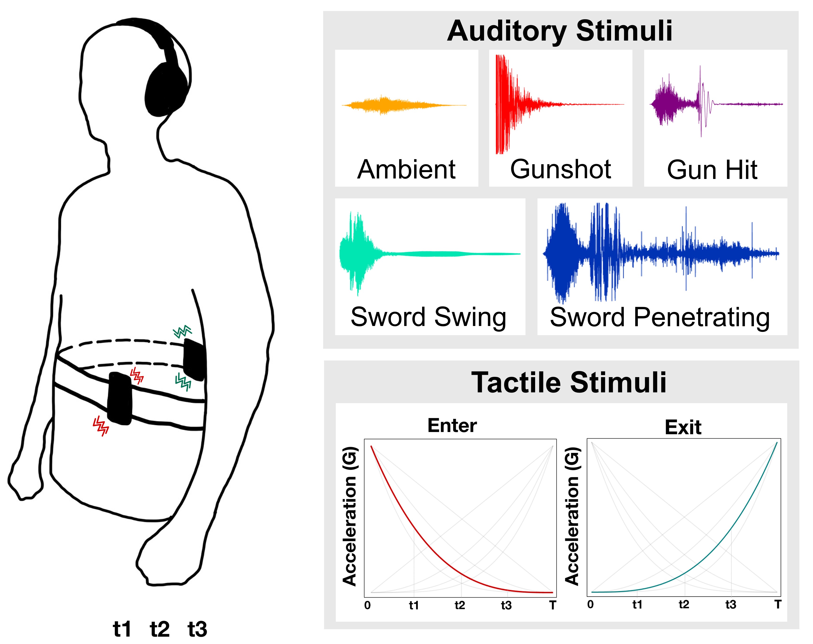

Publications
Thesis

Generating Gaze-Adaptive Haptic Cinematic Effects via Semantic Audio Classification
Master's Thesis, Pohang University of Science and Technology (POSTECH), 2026 (Expected).
M.S. Thesis
시선 추적과 오디오 분석을 결합하여, 사용자가 바라보는 화면 위치에 맞춰 햅틱 피드백을 적응적으로 생성하는 시스템을 제안하였습니다. 기존 전역 햅틱 방식 대비 표현력과 몰입감을 유의미하게 향상시켰습니다.
International Conference

Enhancing Body-Penetrating Phantom Sensations Through Multisensory Integration of Sound and Vibration
Proceedings of the IEEE World Haptics Conference, 2025.
Oral Presentation
소리와 진동의 동기화를 통해 신체 내부를 관통하는 듯한 팬텀 감각을 생성하는 멀티모달 햅틱 인터페이스를 제안합니다.
Demonstrations
Body-Penetrating Tactile Phantom Sensations Enhanced by Sound
Proceedings of the IEEE World Haptics Conference, pp. 870, July 8-11, 2025.
Hands-on Demo
Domestic Conference
가상현실 일인칭 슈팅 게임을 위한 실시간 의미론적 소리 기반 전신 헵틱 효과 생성
한국 햅틱스 학술대회 (Korea Haptics Conference), August 19-21, 2024.
(Eng) Generating Real-Time, Semantic, Sound-based, Full-Body Haptic Effects for Virtual Reality First-Person Shooter Games
APACHE5 NPU SoC 환경에서의 딥러닝 기반 도로영상 인식
한국정보과학회 2023 한국소프트웨어종합학술대회 논문집 (KSC 2023), pp. 967-969, Dec 2023.
(Eng) [cite_start]Deep Learning-based Road Image Recognition in APACHE5 NPU SoC Environment [cite: 1]